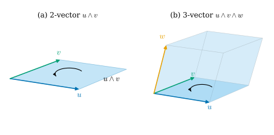
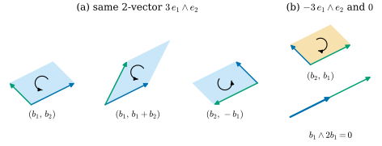
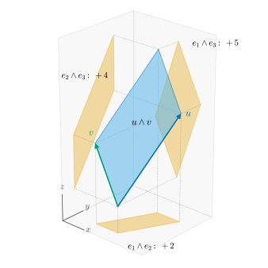

34.1 The Wedge Product and k-Vectors
Goals
- \(k\)-vector를 “방향과 크기가 있는 \(k\)차원의 작은 부피”로 설명하고, wedge product의 네 규칙만으로 \(k\)-vector를 계산할 수 있다.
- antisymmetry, degeneracy(\(u_1\wedge\cdots\wedge u_k = 0\)과 linear dependence의 동치), basis를 바꿀 때 determinant가 곱해진다는 사실을 증명할 수 있다.
- basis \(k\)-vector \(e_{i_1}\wedge\cdots\wedge e_{i_k}\)(\(i_1 \lt \cdots \lt i_k\))가 basis이고 \(\dim\Lambda^kV = \binom{n}{k}\)임을 증명하고, simple \(k\)-vector의 성분이 \(k\times k\) minor임을 계산에 쓸 수 있다.
Prerequisites
- Definition 1.1.8 (linear combination and span), Definition 1.1.9 (linearly independent), Lemma 1.1.11 (linear dependence lemma), Theorem 1.1.18 (existence and length of bases)
- Proposition 1.2.4 (a linear map is determined by its values on a basis)
- Definition 1.6.1 (multilinear and alternating), Theorem 1.6.5 (existence and uniqueness of the determinant), Theorem 1.6.8 (properties of the determinant), Definition 1.6.11 (orientation)
- (선택) Tour Section 0.7의 “wedge product는 signed area”
Motivation
Track 2의 목표는 mesh 위에서 미분기하의 계산을 하는 것이다(Chapter 32). Chapter 33에서 보았듯이 mesh는 vertex, edge, triangle, tetrahedron으로 되어 있고, 이것들은 각각 \(0, 1, 2, 3\)차원의 작은 조각이다. mesh 위의 방정식을 풀려면 이런 조각 위에서 무언가를 적분하고, 조각끼리 비교하고, 조각의 경계를 따라 더해야 한다. 그러려면 먼저 “방향이 있는 작은 \(k\)차원 부피”를 대수적으로 다룰 수 있어야 한다.
Crane의 강의와 노트는 이 길을 네 단계로 나눈다 [Cr ch. 4], [CMU-DDG L3].
- linear algebra: vector, 즉 화살표를 더하고 늘인다(Chapter 1).
- vector calculus: 점마다 붙은 화살표가 어떻게 변하는지 미분한다.
- exterior algebra: \(k\)차원의 작은 부피(\(k\)-vector)를 더하고 늘이고 곱한다. 이 장의 주제다.
- exterior calculus: 점마다 붙은 작은 부피와 그것을 재는 도구가 어떻게 변하는지 미분하고 적분한다(Chapter 35). Chapter 36은 이것을 mesh 위에서 그대로 따라 한다.
linear algebra에도 크기를 재는 도구가 이미 있다. 그러나 셋 다 모자란다. span(Definition 1.1.8)은 vector들이 펼치는 subspace를 주지만 크기도 방향도 없다. determinant(Definition 1.6.6)는 부호 있는 부피를 주지만 \(\R^n\)의 vector \(n\)개에만 쓸 수 있다. \(\R^3\)의 cross product(Definition 1.6.15)는 평행사변형의 넓이를 주지만 \(\R^3\)에서만 정의되고, 평면을 그 법선 vector로 바꿔 놓는다. 이 절에서는 \(\R^n\)의 vector \(k\)개(\(k \le n\)이면 무엇이든)가 만드는 조각의 subspace, 크기, 방향을 한꺼번에 기록하고 더하거나 늘일 수 있는 대상, 즉 \(k\)-vector를 만든다.
Little Oriented Volumes
먼저 그림으로 보자. Figure 34.1.1의 (a)에서 파란 화살표 \(u\)와 초록 화살표 \(v\)는 하늘색 평행사변형을 펼친다. 이 평행사변형에 “\(u\)에서 \(v\)로 도는 방향”(검은 곡선 화살표)을 붙인 것이 2-vector \(u\wedge v\)다. (b)에서는 같은 평행사변형을 주황 화살표 \(w\) 방향으로 밀어 parallelepiped를 만든다. 진하게 칠한 바닥면이 \(u\wedge v\)이고, 상자 전체가 3-vector \(u\wedge v\wedge w\)다. vector \(u\) 하나는 1-vector, 즉 방향이 있는 선분이다.

이 그림을 가지고 놀면 규칙 몇 개가 보인다.
- 늘이기. 한 변 \(u\)를 \(a\)배 하면 넓이가 \(a\)배가 된다. \(a \lt 0\)이면 도는 방향이 뒤집힌다. 그래서 \((au)\wedge v = a(u\wedge v)\)로 쓴다.
- 더하기. 밑변 \(u\)가 같은 두 평행사변형 \(u\wedge v_1\)과 \(u\wedge v_2\)를 생각하자. 밑변이 같으면 넓이는 높이(\(u\)에 수직인 성분)로 정해지고, \(v_1 + v_2\)의 높이는 두 높이의 합이다. 그래서 \(u\wedge v_1 + u\wedge v_2 = u\wedge(v_1 + v_2)\)이다.
- 납작함. \(u\)와 \(u\)로 만든 “평행사변형”은 넓이가 \(0\)이다: \(u\wedge u = 0\).
- 밀기. \(u\wedge v\)를 만든 뒤 \(w\)로 밀든, \(v\wedge w\)를 만든 뒤 \(u\)로 밀든 같은 상자가 생긴다: \((u\wedge v)\wedge w = u\wedge(v\wedge w)\).
평행사변형의 정확한 모양은 중요하지 않다. 같은 평면에 놓이고, 넓이가 같고, 도는 방향이 같으면 같은 2-vector다(Figure 34.1.2, Proposition 34.1.9). 이 절은 위 규칙들을 정의로 삼고, 거기서 나머지를 모두 증명한다.
The Rules of the Wedge Product
Definition 34.1.1 (k-vector). \(V\)가 \(n\)차원 vector space(\(n \ge 1\))라 하자. 각 정수 \(k \ge 0\)마다 vector space \(\Lambda^kV\)가 있어서 \(\Lambda^0V = \R\), \(\Lambda^1V = V\)이고, 각 \(k, l \ge 0\)마다 bilinear map \[ \wedge\colon \Lambda^kV \times \Lambda^lV \to \Lambda^{k+l}V, \qquad (\xi, \eta) \mapsto \xi\wedge\eta \] 이 있어서 다음 네 규칙이 성립한다고 하자.
- (W1) associativity: \((\xi\wedge\eta)\wedge\zeta = \xi\wedge(\eta\wedge\zeta)\)이다. 또 \(c \in \Lambda^0V = \R\)이면 \(c\wedge\xi = \xi\wedge c = c\,\xi\)이다.
- (W2) degeneracy: 모든 \(v \in V\)에 대하여 \(v\wedge v = 0\)이다.
- (W3) generation: \(k \ge 1\)이면 \(\Lambda^kV\)의 모든 원소는 \(v_1\wedge\cdots\wedge v_k\)(\(v_j \in V\)) 꼴의 원소 유한 개의 합이다.
- (W4) non-collapse: \(V\)의 어떤 basis \((b_1, \dots, b_n)\)에 대하여 \(b_1\wedge\cdots\wedge b_n \neq 0\)이다.
\(\Lambda^kV\)의 원소를 k-vector(k-벡터)라 하고, \(v_1\wedge\cdots\wedge v_k\) 꼴의 \(k\)-vector(\(k = 0\)이면 scalar)를 simple k-vector(단순 k-벡터)라 한다. 연산 \(\wedge\)를 wedge product(쐐기곱)라 한다.
(W1) 덕분에 괄호 없이 \(v_1\wedge\cdots\wedge v_k\)라 쓸 수 있다. 0-vector는 scalar이고 1-vector는 \(V\)의 vector 그 자체다. bilinearity가 위의 “늘이기”와 “더하기”를, (W2)가 “납작함”을, (W1)이 “밀기”를 옮긴 것이다. (W3)은 \(\Lambda^kV\)에 vector들의 wedge로 만들 수 없는 군더더기가 없다는 뜻이고, (W4)는 진짜 \(n\)차원 상자의 부피가 \(0\)이 아니라는 뜻이다. 네 규칙 어디에도 inner product가 없다. 그래서 길이와 각은 아직 잴 수 없고, 같은 subspace 안의 부피의 비만 잴 수 있다(Proposition 34.1.9). 절대적인 크기는 Section 34.2에서 inner product로 준다.
이런 \(\Lambda^kV\)와 \(\wedge\)가 실제로 있고 본질적으로 하나뿐이라는 것은 Theorem 34.5.3에서 좌표로 구성해 보인다. 이 절부터 Section 34.4까지의 증명은 (W1)–(W4)만 쓴다. 따라서 어떤 구성을 택하든 그 결과가 성립한다. 이 study set은 같은 이름의 연산을 Chapter 17에서 covector에 대해 정의한다(Section 17.1). 두 연산의 관계는 Section 34.4에서 정리한다.
Non-example 34.1.2 (dropping a rule). 네 규칙은 모두 필요하다. 하나씩 빼 보자.
- (a) (W4)를 빼면: \(k \ge 2\)이면 \(\Lambda^kV = \{0\}\)으로 두고 \(\wedge\)는 \(k + l \ge 2\)일 때 모두 \(0\)으로 둔다. (W1)–(W3)은 성립하지만 모든 넓이와 부피가 \(0\)이 되어 아무것도 잴 수 없다.
- (b) (W2)를 빼면: \(V = \R^n\)이고 \(\Lambda^k\)를 변수 \(x^1, \dots, x^n\)의 \(k\)차 동차다항식 전체, \(\wedge\)를 다항식의 곱으로 두자(\(\Lambda^1\)은 일차식 \(\sum_i a_i x^i\)이고, 이것을 vector \((a_1, \dots, a_n)\)과 같은 것으로 본다). 곱은 bilinear이고 결합법칙을 만족하며, \(k\)차 동차다항식은 일차식 \(k\)개의 곱(단항식)의 합이고, \(x^1x^2\cdots x^n \neq 0\)이다. 그러나 \(x^1 \cdot x^1 = (x^1)^2 \neq 0\)이라 (W2)가 깨진다. 이 곱은 순서를 바꿔도 부호가 바뀌지 않는다. 방향이 없는 곱이다.
- (c) (W3)을 빼면: (W1)–(W4)를 만족하는 \(\Lambda^kV\)와 \(\wedge\)(Theorem 34.5.3에서 만든다)를 잡고, 2-vector의 공간만 \(\Lambda^2V \oplus \R\)로 바꾸자. 덧붙인 \(\R\) 성분은 scalar를 곱하면 함께 늘어나고, degree가 \(1\) 이상인 것과 wedge할 때는 버린다. 그러면 bilinearity와 (W1), (W2), (W4)는 그대로지만 \((0, 1)\)은 vector들의 wedge의 합으로 쓸 수 없다. 이런 군더더기가 있으면 2-vector 공간의 dimension이 \(\binom{n}{2}\)로 정해지지 않는다(Theorem 34.1.11의 증명이 (W3)을 쓴다).
- (d) (W1)을 빼면: \(V = \R^3\)에서 (W1)–(W4)를 만족하는 \(\wedge\)를 잡고, \(\Lambda^1V \times \Lambda^2V \to \Lambda^3V\)의 곱에만 \(-1\)을 곱하자. bilinearity, (W2), (W4), 그리고 (W3)(괄호를 어느 쪽으로 묶어 읽어도)은 그대로지만 \((e_1\wedge e_2)\wedge e_3 = -\,e_1\wedge(e_2\wedge e_3)\)이 된다. 같은 상자를 “밀기”의 순서에 따라 다른 부호로 기록하게 되므로 위의 그림과 맞지 않는다.
Antisymmetry
(W2)는 같은 vector 둘만 말한다. 순서를 바꾸면 무슨 일이 생기는지는 거기서 나온다.
Proposition 34.1.3 (antisymmetry). Definition 34.1.1의 상황에서 다음이 성립한다.
- (a) 모든 \(u, v \in V\)에 대하여 \(u\wedge v = -v\wedge u\)이다.
- (b) \(v_1\wedge\cdots\wedge v_k\)에서 두 인자의 자리를 맞바꾸면 부호만 바뀐다. 두 인자가 같으면 \(v_1\wedge\cdots\wedge v_k = 0\)이다. 즉 map \((v_1, \dots, v_k) \mapsto v_1\wedge\cdots\wedge v_k\)는 multilinear이고 alternating이다(Definition 1.6.1).
- (c) \(\xi \in \Lambda^kV\), \(\eta \in \Lambda^lV\)이면 \(\xi\wedge\eta = (-1)^{kl}\,\eta\wedge\xi\)이다.
이 명제가 말하는 것. 인자를 한 번 맞바꿀 때마다 orientation이 뒤집힌다(Figure 34.1.2(b)). (c)는 degree가 홀수인 것끼리만 부호가 바뀐다는 뜻이다. 예를 들어 vector와 2-vector는 \(u\wedge(v\wedge w) = (v\wedge w)\wedge u\)로 교환된다.
Proof idea: (a)는 \((u + v)\wedge(u + v) = 0\)을 bilinearity로 펼친다. (b)는 멀리 떨어진 맞바꾸기를 이웃한 맞바꾸기 여러 번으로 쪼갠다. (c)는 (b)를 \(kl\)번 쓴다.
Proof. (a) (W2)와 bilinearity에서 \[ \begin{aligned} 0 = (u + v)\wedge(u + v) &= u\wedge u + u\wedge v + v\wedge u + v\wedge v \\ &= u\wedge v + v\wedge u \end{aligned} \] 이다(Lemma 1.6.2의 (b)\(\Rightarrow\)(a)와 같은 계산).
(b) multilinear인 것은 bilinearity와 (W1)에서 나온다. 이웃한 두 인자 \(v_i, v_{i+1}\)을 맞바꾸면, (W1)로
\[ \begin{aligned} v_1\wedge\cdots\wedge v_k = {} & (v_1\wedge\cdots\wedge v_{i-1})\wedge(v_i\wedge v_{i+1}) \\ & \wedge(v_{i+2}\wedge\cdots\wedge v_k) \end{aligned} \]
로 묶고 가운데에 (a)를 쓰면 부호만 바뀐다. \(i \lt j\)인 \(v_i\)와 \(v_j\)를 맞바꾸려면, 먼저 \(v_j\)를 이웃한 맞바꾸기 \(j - i\)번으로 \(i\)번째 자리까지 옮기고, 그다음 한 칸 밀려난 \(v_i\)를 \(j - i - 1\)번으로 \(j\)번째 자리까지 옮긴다. 모두 \(2(j - i) - 1\)번, 홀수 번이므로 부호만 바뀐다. \(v_i = v_j\)이면 맞바꾼 결과가 원래와 같으므로 \(\xi = -\xi\), 즉 \(\xi = 0\)이다.
(c) \(k = 0\)이나 \(l = 0\)이면 (W1)의 둘째 문장이다. \(\xi = u_1\wedge\cdots\wedge u_k\), \(\eta = v_1\wedge\cdots\wedge v_l\)이 simple이면 \(v_1\)을 \(u_k, \dots, u_1\)을 차례로 지나 맨 앞으로 옮기는 데 이웃한 맞바꾸기 \(k\)번, \(v_2\)를 \(v_1\) 바로 뒤로 옮기는 데 \(k\)번, …, 모두 \(kl\)번이 든다. 일반적인 \(\xi, \eta\)는 (W3)에 의해 simple한 것의 합이고 양변이 bilinear이므로 성립한다.
Example 34.1.4 (computing with the rules). (a) \(\R^2\)의 standard basis \((e_1, e_2)\)와 Chapter 1의 기준 basis \(b_1 = (2, 1) = 2e_1 + e_2\), \(b_2 = (-1, 1) = -e_1 + e_2\)(Example 1.1.15)를 쓰자. 이 계산이 처음 나오므로 모든 단계를 쓴다. bilinearity로 펼치면
\[ \begin{aligned} &b_1\wedge b_2 = (2e_1 + e_2)\wedge(-e_1 + e_2) \\ &\quad = -2\,e_1\wedge e_1 + 2\,e_1\wedge e_2 - e_2\wedge e_1 + e_2\wedge e_2 \\ &\quad = 0 + 2\,e_1\wedge e_2 + e_1\wedge e_2 + 0 = 3\,e_1\wedge e_2 \end{aligned} \]
이다. 셋째 줄에서 (W2)로 \(e_i\wedge e_i = 0\), Proposition 34.1.3(a)로 \(-e_2\wedge e_1 = e_1\wedge e_2\)를 썼다. coefficient \(3\)은 Figure 1.6.1(a)의 signed area \(\det(b_1, b_2) = 3\)이다.
(b) \(\R^3\)에서 \(u = (1, 2, 3) = e_1 + 2e_2 + 3e_3\), \(v = (-1, 0, 2) = -e_1 + 2e_3\)(Example 1.6.18의 두 vector)이면 같은 방법으로
\[ \begin{aligned} u\wedge v &= -e_1\wedge e_1 + 2\,e_1\wedge e_3 - 2\,e_2\wedge e_1 \\ &\quad + 4\,e_2\wedge e_3 - 3\,e_3\wedge e_1 + 6\,e_3\wedge e_3 \\ &= 2\,e_1\wedge e_2 + 5\,e_1\wedge e_3 + 4\,e_2\wedge e_3 \end{aligned} \]
이다. \(e_1\wedge e_3\)의 coefficient \(5\)는 \(2\,e_1\wedge e_3\)과 \(-3\,e_3\wedge e_1 = 3\,e_1\wedge e_3\)을 더한 것이다. 세 coefficient의 기하적 뜻은 Example 34.1.10에서 본다.
Verification: verify/v-34-1-wedge.py
Change of Basis and the Determinant
계산을 체계적으로 하려면 Example 34.1.4의 “펼치고, 같은 것은 지우고, 순서를 맞춘다”를 한 번에 해 두면 좋다. 그 결과는 determinant다. 먼저 기호를 정하자. \(\{1, \dots, m\}\)에서 고른 서로 다른 수 \(k\)개를 작은 것부터 늘어놓은 \(I = (i_1, \dots, i_k)\), \(i_1 \lt \cdots \lt i_k\)를 increasing multi-index(증가 다중지표)라 한다. 그런 \(I\)는 \(\binom{m}{k}\)개다. \(m \times k\) 행렬 \(A\)에 대하여 \(A_I\)는 \(A\)의 \(i_1, \dots, i_k\)번째 행만 남긴 \(k \times k\) 행렬이고, \(\det A_I\)를 \(A\)의 \(k\times k\) minor(소행렬식)라 한다.
Lemma 34.1.5 (expansion lemma). \(W\)가 basis \((b_1, \dots, b_m)\)를 가진 vector space이고 \(Z\)가 vector space이며 \(k \ge 1\)이라 하자. \(F\colon W \times \cdots \times W \to Z\)(\(W\)가 \(k\)개)가 multilinear이고 두 인자가 같으면 \(0\)이라 하자. \(w_j = \sum_{i=1}^{m} A^i_j\, b_i\)(\(j = 1, \dots, k\)), 즉 \(A\)가 \(j\)번째 열에 \(w_j\)의 성분을 담은 \(m \times k\) 행렬이면
이다. 합은 길이 \(k\)인 increasing multi-index \(I\) 전체에 대한 것이다. 특히 \(k \gt m\)이면 \(F = 0\)이다.
이 보조정리가 말하는 것. alternating multilinear map은 basis vector를 증가하는 순서로 넣은 값 \(\binom{m}{k}\)개로 완전히 정해지고, 각각의 coefficient는 minor다. \(k = m\)이고 \(Z = \R\)이면 Theorem 1.6.5의 (1.6.1) 그 자체다.
Proof idea: \(F(w_1, \dots, w_k)\)를 multilinearity로 모두 펼친 뒤, 같은 집합의 basis vector가 들어간 항끼리 묶는다. 한 묶음은 \(k\)차원에서의 determinant 계산과 똑같으므로 Theorem 1.6.5가 끝을 낸다.
Proof. 1단계. Theorem 1.6.5의 유일성 증명((1.6.3)에서 (1.6.1)을 얻는 부분)은 multilinearity와 “두 자리를 맞바꾸면 부호가 바뀐다”는 것만 쓰고, 값이 실수라는 사실은 쓰지 않는다. 따라서 값이 vector space \(Z\)에 있는 multilinear alternating map \(D\colon \R^k \times \cdots \times \R^k \to Z\)에도
\[ D(a_1, \dots, a_k) = \det[a_1\ \cdots\ a_k]\; D(e_1, \dots, e_k) \]
가 그대로 성립한다(\(e_c\)는 \(\R^k\)의 standard basis, \(D\)는 Lemma 1.6.2에 의해 alternating이다).
2단계. 각 자리의 linearity를 차례로 쓰면
\[ F(w_1, \dots, w_k) = \sum_{j_1=1}^{m}\cdots\sum_{j_k=1}^{m} A^{j_1}_1 \cdots A^{j_k}_k\, F(b_{j_1}, \dots, b_{j_k}) \]
이다. \(j_1, \dots, j_k\) 가운데 같은 것이 있는 항은 가정에 의해 \(0\)이다. \(k \gt m\)이면 모든 항이 그렇므로 \(F = 0\)이다. \(k \le m\)이면 남은 항의 \(\{j_1, \dots, j_k\}\)는 원소가 \(k\)개인 집합이고, 그것을 작은 것부터 늘어놓으면 increasing multi-index \(I\)가 된다. 남은 항을 \(I\)마다 묶자.
3단계. \(I = (i_1, \dots, i_k)\)를 고정하고 \(D_I\colon (\R^k)^k \to Z\)를 \[ D_I(a_1, \dots, a_k) = F\big(\sum_{c} a_1^c\, b_{i_c}, \dots, \sum_{c} a_k^c\, b_{i_c}\big) \]로 정의하자. linear map \(a \mapsto \sum_c a^c b_{i_c}\)와 \(F\)의 합성이므로 \(D_I\)는 multilinear이고 두 인자가 같으면 \(0\)이다. \(a_j\)를 \(A_I\)의 \(j\)번째 열, 즉 \(a_j^c = A^{i_c}_j\)로 두고 \(D_I(a_1, \dots, a_k)\)를 2단계처럼 펼치면 \[ \sum_{c_1, \dots, c_k} A^{i_{c_1}}_1 \cdots A^{i_{c_k}}_k\, F(b_{i_{c_1}}, \dots, b_{i_{c_k}}) \]이다. 이것은 2단계의 \(I\) 묶음에 같은 첨자가 있는 항(값이 \(0\))을 더한 것이다. 따라서 1단계에 의해 \(I\) 묶음의 합은
\[ \begin{aligned} D_I(a_1, \dots, a_k) &= \det(A_I)\, D_I(e_1, \dots, e_k) \\ &= \det(A_I)\, F(b_{i_1}, \dots, b_{i_k}) \end{aligned} \]
이다. \(I\)에 대해 더하면 (34.1.1)이다.
Proposition 34.1.6 (wedge products and determinants). \(V\)가 \(n\)차원이라 하자.
- (a) (change of basis) \(u_1, \dots, u_k \in V\)이고 \(w_j = \sum_{i=1}^{k} A^i_j\, u_i\)(\(A\)는 \(k\times k\))이면 \(w_1\wedge\cdots\wedge w_k = \det(A)\; u_1\wedge\cdots\wedge u_k\)이다.
- (b) (components) \((e_1, \dots, e_n)\)이 \(V\)의 basis이고 \(u_j = \sum_{i} U^i_j\, e_i\)(\(U\)는 \(n\times k\))이면
\[ \begin{aligned} &u_1\wedge\cdots\wedge u_k \\ &\quad = \sum_{I} \det(U_I)\; e_{i_1}\wedge\cdots\wedge e_{i_k} \end{aligned} \tag{34.1.2} \]이다. \(k \gt n\)이면 \(u_1\wedge\cdots\wedge u_k = 0\)이다.
- (c) \(u_1\wedge\cdots\wedge u_n = \det(U)\; e_1\wedge\cdots\wedge e_n\)이고, \(V\)의 모든 basis \((c_1, \dots, c_n)\)에 대하여 \(c_1\wedge\cdots\wedge c_n \neq 0\)이다.
이 명제가 말하는 것. 같은 subspace를 펼치는 두 목록의 \(k\)-vector는 change-of-basis matrix의 determinant 배만큼 다르다. 그리고 simple \(k\)-vector의 성분은 성분 행렬의 \(k\times k\) minor다.
Proof. (a) \(F\colon (\R^k)^k \to \Lambda^kV\)를 \[ F(a_1, \dots, a_k) = \big(\sum_i a_1^i u_i\big)\wedge\cdots\wedge\big(\sum_i a_k^i u_i\big) \]로 두면 \(F\)는 multilinear이고, Proposition 34.1.3(b)에 의해 두 인자가 같으면 \(0\)이다. Lemma 34.1.5를 \(W = \R^k\)(standard basis, \(m = k\))에 쓰면 increasing multi-index는 \((1, \dots, k)\) 하나뿐이고 \(A_{(1,\dots,k)} = A\)이므로 \[ F(A\text{의 열}) = \det(A)\,F(e_1, \dots, e_k) = \det(A)\,u_1\wedge\cdots\wedge u_k \]이다.
(b) map \((u_1, \dots, u_k) \mapsto u_1\wedge\cdots\wedge u_k\)는 Proposition 34.1.3(b)에 의해 multilinear이고 alternating이다. Lemma 34.1.5를 \(W = V\), basis \((e_i)\)에 쓴다.
(c) 첫째 식은 (b)에서 \(k = n\)인 경우다(\(I = (1, \dots, n)\) 하나뿐). (W4)의 basis \((b_1, \dots, b_n)\)를 \((c_i)\)로 전개한 행렬을 \(B\)라 하면 첫째 식에 의해 \(b_1\wedge\cdots\wedge b_n = \det(B)\,c_1\wedge\cdots\wedge c_n\)이다. 좌변이 \(0\)이 아니므로 \(c_1\wedge\cdots\wedge c_n \neq 0\)이다.
Example 34.1.7 (signed area in the plane). \(n = 2\)이면 (34.1.2)에서
이다. coefficient는 Section 1.6의 signed area다. \(b_1\wedge b_2 = 3\,e_1\wedge e_2\)(Example 34.1.4(a))는 \(\det\begin{pmatrix} 2 & -1 \\ 1 & 1\end{pmatrix} = 3\)이다. \(\Lambda^2\R^2\)는 \(e_1\wedge e_2\)의 배수뿐이므로(Theorem 34.1.11에서 \(\dim = \binom{2}{2} = 1\)), \(\R^2\)의 2-vector는 “signed area” 하나다.
Verification: verify/v-34-1-wedge.py
Figure 34.1.2의 (a)를 보자. 세 하늘색 평행사변형은 모양이 다르다. 왼쪽은 \((b_1, b_2)\)이고, 가운데는 둘째 변을 \(b_1 + b_2\)로 밀어 기울였고(\(A = \begin{pmatrix} 1 & 1 \\ 0 & 1\end{pmatrix}\)), 오른쪽은 두 변을 \((b_2, -b_1)\)로 바꾸었다(\(A = \begin{pmatrix} 0 & -1 \\ 1 & 0\end{pmatrix}\)). 세 \(A\)의 determinant가 모두 \(1\)이므로 Proposition 34.1.6(a)에 의해 세 쌍은 같은 2-vector \(3\,e_1\wedge e_2\)를 준다. 곡선 화살표가 모두 반시계 방향인 것을 확인하자. (b)의 주황 평행사변형은 왼쪽 것과 같은 모양이지만 인자의 순서가 \((b_2, b_1)\)이라 시계 방향이고 값이 \(-3\,e_1\wedge e_2\)다. 아래의 겹친 두 화살표 \(b_1\)과 \(2b_1\)은 넓이가 없는 “평행사변형”이고 그 wedge는 \(0\)이다.

Proposition 34.1.8 (degeneracy and linear dependence). \(u_1, \dots, u_k \in V\)(\(k \ge 1\))에 대하여 \(u_1\wedge\cdots\wedge u_k = 0\)일 필요충분조건은 \((u_1, \dots, u_k)\)가 linearly dependent인 것이다. 특히 \(k \gt n\)이면 \(\Lambda^kV = \{0\}\)이다.
이 명제가 말하는 것. \(k\)개의 vector가 납작한 조각(\(k\)차원보다 작은 subspace 안의 조각)을 만들 때, 그리고 그때만 \(k\)-vector가 \(0\)이다. \(n\)차원 공간에는 \(n\)차원보다 큰 조각이 없다.
Proof. linearly dependent이면 Lemma 1.1.11에 의해 어떤 \(u_j\)가 \(u_j = \sum_{i \lt j} c^i u_i\)이다. 이것을 \(j\)번째 자리에 넣고 linearity로 펼치면 각 항에 같은 \(u_i\)가 두 번 나오므로 Proposition 34.1.3(b)에 의해 모든 항이 \(0\)이다.
거꾸로 linearly independent이면 Theorem 1.1.18(b)로 basis \((u_1, \dots, u_k, u_{k+1}, \dots, u_n)\)까지 늘린다. (W1)에 의해 \((u_1\wedge\cdots\wedge u_k)\wedge(u_{k+1}\wedge\cdots\wedge u_n)\) \(= u_1\wedge\cdots\wedge u_n\)이고, Proposition 34.1.6(c)에 의해 이것은 \(0\)이 아니다. \(0\wedge\eta = 0\)(bilinearity)이므로 \(u_1\wedge\cdots\wedge u_k \neq 0\)이다.
\(k \gt n\)이면 vector \(k\)개는 언제나 linearly dependent이므로(Theorem 1.1.18) 모든 simple \(k\)-vector가 \(0\)이고, (W3)에 의해 \(\Lambda^kV = \{0\}\)이다.
Proposition 34.1.9 (what a simple k-vector remembers). \((u_1, \dots, u_k)\)와 \((w_1, \dots, w_k)\)가 \(V\)의 linearly independent인 목록이라 하자. \(u_1\wedge\cdots\wedge u_k = w_1\wedge\cdots\wedge w_k\)일 필요충분조건은 \(\Span(u_1, \dots, u_k) = \Span(w_1, \dots, w_k)\)이고, \(w_j = \sum_i A^i_j\, u_i\)로 쓴 \(k\times k\) 행렬 \(A\)가 \(\det A = 1\)인 것이다.
이 명제가 말하는 것. \(0\)이 아닌 simple \(k\)-vector는 세 가지를 기억한다. (1) 펼치는 \(k\)차원 subspace \(W\), (2) \(W\)의 orientation(Definition 1.6.11: \(\det A \gt 0\)인 basis끼리 같다), (3) \(W\) 안에서의 부피의 눈금(\(\det A = 1\)). 모양과 위치는 기억하지 않는다. Crane이 2-vector를 “평면, 넓이, 방향이 같은 평행사변형들의 equivalence class”라고 부른 것을 정확히 한 것이다 [CMU-DDG L3].
Proof. 조건이 성립하면 Proposition 34.1.6(a)에 의해 \(w_1\wedge\cdots\wedge w_k = \det(A)\,u_1\wedge\cdots\wedge u_k\) \(= u_1\wedge\cdots\wedge u_k\)이다.
거꾸로 \(\xi := u_1\wedge\cdots\wedge u_k = w_1\wedge\cdots\wedge w_k\)라 하자. Proposition 34.1.8에 의해 \(\xi \neq 0\)이다. 각 \(j\)에 대하여 \(\xi\wedge w_j = w_1\wedge\cdots\wedge w_k\wedge w_j = 0\)이다(같은 인자가 두 번, Proposition 34.1.3(b)). 그런데 \(\xi\wedge w_j = u_1\wedge\cdots\wedge u_k\wedge w_j\)이므로 Proposition 34.1.8에 의해 \((u_1, \dots, u_k, w_j)\)는 linearly dependent이다. Lemma 1.1.11이 주는 vector는 \(u_i\)일 수 없으므로(\(u\)들은 linearly independent) \(w_j\)이고, 따라서 \(w_j \in \Span(u_1, \dots, u_k)\)이다. 그러면 \(\Span(w) \subseteq \Span(u)\)이고 둘 다 dimension이 \(k\)이므로 같다(Corollary 1.1.21(c)). 이제 \(w_j = \sum_i A^i_j u_i\)로 쓰면 Proposition 34.1.6(a)에 의해 \(\xi = \det(A)\,\xi\)이고 \(\xi \neq 0\)이므로 \(\det A = 1\)이다.
Example 34.1.10 (components as shadow areas). Example 34.1.4(b)의 \(u = (1, 2, 3)\), \(v = (-1, 0, 2)\)를 다시 보자. 성분 행렬은 \(U = \begin{pmatrix} 1 & -1 \\ 2 & 0 \\ 3 & 2\end{pmatrix}\)이고, (34.1.2)의 minor는
\[ \begin{aligned} \det U_{(1,2)} &= \det\begin{pmatrix} 1 & -1 \\ 2 & 0\end{pmatrix} = 2, \\ \det U_{(1,3)} &= \det\begin{pmatrix} 1 & -1 \\ 3 & 2\end{pmatrix} = 5, \\ \det U_{(2,3)} &= \det\begin{pmatrix} 2 & 0 \\ 3 & 2\end{pmatrix} = 4 \end{aligned} \]
이다. Example 34.1.4(b)에서 규칙으로 계산한 \(u\wedge v = 2\,e_1\wedge e_2 + 5\,e_1\wedge e_3 + 4\,e_2\wedge e_3\)와 같다. minor \(\det U_{(i,j)}\)의 기하적 뜻은 이렇다. \(\pi_{ij}\)를 좌표평면 \(\Span(e_i, e_j)\)로의 정사영이라 하면, \(\pi_{ij}u\)와 \(\pi_{ij}v\)의 \((e_i, e_j)\)-좌표는 \(U\)의 \(i, j\)번째 행이다. 따라서 (34.1.3)에 의해 \(\det U_{(i,j)}\)는 평행사변형의 그림자 \(\pi_{ij}(u\wedge v)\)의 signed area이다. 여기서 평면 \(\Span(e_i, e_j)\)는 \((e_i, e_j)\)로 orientation을 준다. 같은 방법으로 \(w = (1, 0, 1)\)이면 \[ u\wedge v\wedge w = \det(u, v, w)\,e_1\wedge e_2\wedge e_3 = 6\,e_1\wedge e_2\wedge e_3 \]이다.
Verification: verify/v-34-1-wedge.py
Figure 34.1.3이 이 예다. 가운데 하늘색 평행사변형이 \(u\wedge v\)이고, 회색 점선은 네 vertex에서 세 벽으로 수직으로 내린 선이다. 주황 그림자는 바닥(\(xy\)평면과 평행), 오른쪽 벽(\(xz\)평면과 평행), 왼쪽 벽(\(yz\)평면과 평행)에 생긴다. 라벨의 숫자 \(+2\), \(+5\), \(+4\)가 그림자의 signed area이자 \(u\wedge v\)의 성분이다. \(xz\)평면의 그림자가 가장 크다. 평행사변형이 \(y\)축 방향에서 보면 가장 넓게 보인다는 뜻이다. 2-vector는 이렇게 세 좌표평면의 그림자 넓이 세 개로 기록된다.

Basis k-Vectors and Dimension
(34.1.2)는 모든 simple \(k\)-vector가 \(e_{i_1}\wedge\cdots\wedge e_{i_k}\)들의 linear combination임을 말한다. 이것들이 basis인지, 즉 서로 독립인지가 남은 질문이다. 기호를 줄이자. basis \((e_1, \dots, e_n)\)과 increasing multi-index \(I = (i_1, \dots, i_k)\)에 대하여
로 쓰고 basis k-vector라 부른다. 예를 들어 \(e_{(1,3)} = e_1\wedge e_3\)이다. 혼동이 없으면 \(e_{13}\)으로 줄여 쓴다.
Theorem 34.1.11 (basis k-vectors). \((e_1, \dots, e_n)\)이 \(V\)의 basis이고 \(0 \le k \le n\)이면, 길이 \(k\)인 increasing multi-index \(I\) 전체에 대한 \((e_I)\)는 \(\Lambda^kV\)의 basis다. 따라서 \[ \begin{aligned} \dim\Lambda^kV &= \binom{n}{k} \qquad (0 \le k \le n), \\ \Lambda^kV &= \{0\} \qquad (k \gt n) \end{aligned} \] 이다.
이 정리가 말하는 것. \(k\)차원 조각은 좌표 \(k\)-평면 \(\binom{n}{k}\)개 위의 그림자로 정확히 기록되고, 그 기록에는 군더더기가 없다. \(\R^3\)에서 dimension은 \(k = 0, 1, 2, 3\)에 대해 \(1, 3, 3, 1\)이다.
Proof idea: span은 (W3)과 (34.1.2)에서 바로 나온다. 독립성은 \(e_J\)의 “여집합” \(e_{J^c}\)를 wedge하면 \(e_J\)의 coefficient만 살아남는다는 데서 나온다. 거기서 (W4)가 쓰인다.
Proof. \(k = 0\)이면 \(\Lambda^0V = \R\)의 basis \((1)\)이다. \(k \gt n\)인 경우는 Proposition 34.1.8이다. \(1 \le k \le n\)이라 하자.
span: (W3)에 의해 \(\Lambda^kV\)의 원소는 simple \(k\)-vector의 합이고, (34.1.2)에 의해 simple \(k\)-vector는 \(e_I\)들의 linear combination이다.
linear independence: \(\sum_I c_I\, e_I = 0\)이라 하자. increasing multi-index \(J\)를 하나 고르고, \(\{1, \dots, n\}\setminus J\)를 작은 것부터 늘어놓은 것을 \(J^c\)라 하자(길이 \(n - k\)). \(I \neq J\)이면 \(I\)에 있고 \(J\)에 없는 첨자가 있고, 그 첨자는 \(J^c\)에 있으므로 \(e_I\wedge e_{J^c}\)에는 같은 \(e_i\)가 두 번 나와 \(0\)이다(Proposition 34.1.3(b)). 한편 \(e_J\wedge e_{J^c}\)는 \(e_1, \dots, e_n\)을 한 번씩 재배열해 wedge한 것이므로 Proposition 34.1.3(b)에 의해 \(\pm e_1\wedge\cdots\wedge e_n\)이다. 따라서
\[ \begin{aligned} 0 = \Big(\sum_I c_I\, e_I\Big)\wedge e_{J^c} &= c_J\, e_J\wedge e_{J^c} \\ &= \pm c_J\; e_1\wedge\cdots\wedge e_n \end{aligned} \]
이고, Proposition 34.1.6(c)에 의해 \(e_1\wedge\cdots\wedge e_n \neq 0\)이므로 \(c_J = 0\)이다. \(J\)는 아무것이나 골랐으므로 모든 coefficient가 \(0\)이다. increasing multi-index의 개수가 \(\binom{n}{k}\)이므로 dimension이 따른다.
basis가 있으면 linear map을 basis 위의 값으로 정할 수 있다(Proposition 1.2.4). 이것을 \(\Lambda^kV\)에 쓰면 뒤 절에서 Hodge star, inner product, \(k\)-form의 측정을 정의할 때 쓰는 도구가 된다.
Corollary 34.1.12 (linear maps out of the k-vectors). \(Z\)가 vector space이고 \(F\colon V^k \to Z\)가 multilinear이며 두 인자가 같으면 \(0\)이라 하자(\(k \ge 1\)). 그러면 모든 \(u_1, \dots, u_k\)에 대하여 \[ L(u_1\wedge\cdots\wedge u_k) = F(u_1, \dots, u_k) \] 를 만족하는 linear map \(L\colon \Lambda^kV \to Z\)가 꼭 하나 있다.
이 따름정리가 말하는 것. “\(k\)개의 vector에 대해 alternating multilinear인 양”은 곧 “\(k\)-vector에 대해 linear인 양”이다. 이 성질을 exterior algebra의 universal property(보편 성질)라 부른다.
Proof. 유일성: (W3)에 의해 simple \(k\)-vector들이 \(\Lambda^kV\)를 span하므로 linear map은 그 위의 값으로 정해진다. 존재: basis \((e_I)\)(Theorem 34.1.11) 위에서 \(L(e_I) := F(e_{i_1}, \dots, e_{i_k})\)로 정한 linear map을 \(L\)이라 하자(Proposition 1.2.4). (34.1.2)와 Lemma 34.1.5에서
\[ \begin{aligned} L(u_1\wedge\cdots\wedge u_k) &= \sum_I \det(U_I)\, L(e_I) \\ &= \sum_I \det(U_I)\, F(e_{i_1}, \dots, e_{i_k}) \\ &= F(u_1, \dots, u_k) \end{aligned} \]
이다.
Non-example 34.1.13 (a 2-vector that is not simple). \(V = \R^4\)에서 \(\xi = e_1\wedge e_2 + e_3\wedge e_4\)는 2-vector이지만 simple이 아니다. simple 2-vector \(u\wedge v\)는 \((u\wedge v)\wedge(u\wedge v) = 0\)이다(같은 인자가 두 번). 그런데 Proposition 34.1.3(c)로 \(e_3\wedge e_4\wedge e_1\wedge e_2 = e_1\wedge e_2\wedge e_3\wedge e_4\)이므로
\[ \begin{aligned} \xi\wedge\xi &= e_1\wedge e_2\wedge e_3\wedge e_4 + e_3\wedge e_4\wedge e_1\wedge e_2 \\ &= 2\,e_1\wedge e_2\wedge e_3\wedge e_4 \neq 0 \end{aligned} \]
이다(Theorem 34.1.11). 즉 “\(k\)-vector”는 “평행사변형 하나”보다 넓은 개념이다. 서로 수직인 두 평면 위의 조각을 더한 것은 한 평면 위의 조각으로 쓸 수 없다. 반면 \(\R^3\)에서는 모든 2-vector가 simple이다(Exercise 34.1.6).
Summary
- \(k\)-vector는 wedge product의 네 규칙(bilinear, associative, \(v\wedge v = 0\), simple한 것들이 span, basis의 wedge \(\neq 0\))으로 정의한다(Definition 34.1.1). 규칙은 평행사변형과 parallelepiped의 그림에서 나온다.
- 인자를 맞바꾸면 부호가 바뀌고(antisymmetry), \(u_1\wedge\cdots\wedge u_k = 0\)은 linear dependence와 같다(Proposition 34.1.3, Proposition 34.1.8).
- 같은 subspace의 두 basis가 주는 \(k\)-vector는 change-of-basis matrix의 determinant 배만큼 다르다. 그래서 simple \(k\)-vector는 subspace, orientation, 부피의 눈금만 기억한다(Proposition 34.1.6, Proposition 34.1.9).
- simple \(k\)-vector의 성분은 \(k\times k\) minor, 곧 좌표 \(k\)-평면 위 그림자의 signed volume이다((34.1.2)). basis \(k\)-vector \(e_I\)는 basis이고 \(\dim\Lambda^kV = \binom{n}{k}\)이다(Theorem 34.1.11).
- alternating multilinear map은 \(\Lambda^kV\) 위의 linear map과 같다(Corollary 34.1.12).
다음 절에서는 inner product와 orientation을 더한다. 그러면 \(k\)-vector의 절대적인 크기를 잴 수 있고, 평면을 그 법선으로 바꾸듯 \(k\)-vector를 orthogonal complement 쪽의 \((n-k)\)-vector로 바꾸는 Hodge star를 정의할 수 있다. \(\R^3\)의 \(u\wedge v\)와 \(u\times v\)가 같은 숫자를 담는 이유가 거기서 밝혀진다.
Exercises
Exercise 34.1.1 ★ \(\R^3\)에서 규칙만 써서 다음을 \(e_I\)의 linear combination으로 계산하고, (34.1.2)의 minor로 검산하여라. (a) \((e_1 - e_3)\wedge(2e_2 + e_3)\) (b) \((e_1 + e_2)\wedge(e_2 + e_3)\wedge(e_3 + e_1)\). (b)의 결과는 기하적으로 무엇을 뜻하는가?
Solution
(a) 펼치면 \[ \begin{aligned} &2\,e_1\wedge e_2 + e_1\wedge e_3 - 2\,e_3\wedge e_2 - e_3\wedge e_3 \\ &\quad = 2\,e_{12} + e_{13} + 2\,e_{23} \end{aligned} \]이다. 성분 행렬 \(\begin{pmatrix} 1 & 0 \\ 0 & 2 \\ -1 & 1\end{pmatrix}\)의 minor는 행 \((1,2)\): \(2\), 행 \((1,3)\): \(1\cdot 1 - 0\cdot(-1) = 1\), 행 \((2,3)\): \(0\cdot 1 - 2\cdot(-1) = 2\)로 같다.
(b) 먼저 \[ \begin{aligned} (e_1 + e_2)\wedge(e_2 + e_3) &= e_{12} + e_{13} + e_2\wedge e_2 + e_{23} \\ &= e_{12} + e_{13} + e_{23} \end{aligned} \]이다. 여기에 \(e_3 + e_1\)을 wedge하면 같은 인자가 두 번 나오지 않는 항은 \(e_{12}\wedge e_3 = e_{123}\)과 \(e_{23}\wedge e_1 = e_2\wedge e_3\wedge e_1 = e_{123}\)(맞바꾸기 두 번)뿐이다. 따라서 \(2\,e_1\wedge e_2\wedge e_3\)이다. 검산: \(\det\begin{pmatrix} 1 & 0 & 1 \\ 1 & 1 & 0 \\ 0 & 1 & 1\end{pmatrix}\) \(= 1\cdot(1 - 0) - 0 + 1\cdot(1 - 0) = 2\). 뜻: 세 vector는 positively oriented이고, 이들이 만드는 parallelepiped의 부피는 단위 정육면체 \(e_1\wedge e_2\wedge e_3\)의 두 배다.
Exercise 34.1.2 ★ 참인지 거짓인지 판별하고 이유를 써라. (a) \(u\wedge v = 0\)이면 \(u = 0\)이거나 \(v = 0\)이다. (b) \((2u)\wedge(3v) = 6\,u\wedge v\)이다. (c) \((u + v)\wedge(u - v) = -2\,u\wedge v\)이다. (d) \(\R^2\)의 어떤 세 vector에 대해서도 \(u\wedge v\wedge w = 0\)이다. (e) \(u\wedge v = v\wedge u\)이면 \(u\wedge v = 0\)이다.
Solution
(a) 거짓. \(u = e_1\), \(v = 2e_1\)이면 \(u\wedge v = 2\,e_1\wedge e_1 = 0\)이다. 옳은 진술은 “\(u, v\)가 linearly dependent”이다(Proposition 34.1.8). (b) 참. bilinearity. (c) 참. \(u\wedge u - u\wedge v + v\wedge u - v\wedge v\) \(= -u\wedge v - u\wedge v\). (d) 참. \(\Lambda^3\R^2 = \{0\}\)이다(Theorem 34.1.11). 평면 안에는 3차원 상자가 없다. (e) 참. \(v\wedge u = -u\wedge v\)이므로 \(u\wedge v = -u\wedge v\), 즉 \(2\,u\wedge v = 0\)이다.
Exercise 34.1.3 ★★ \((u_1, \dots, u_k)\)가 linearly independent일 때, \(x \in \Span(u_1, \dots, u_k)\)일 필요충분조건이 \(u_1\wedge\cdots\wedge u_k\wedge x = 0\)임을 보여라. 이것으로 \(x_1 = (1, 1, 1)\)과 \(x_2 = (1, 4, 8)\)이 \(u = (1, 2, 3)\), \(v = (-1, 0, 2)\)가 펼치는 평면에 있는지 판정하여라.
Hint
한 방향은 펼치기, 다른 방향은 Proposition 34.1.8과 Lemma 1.1.11이다.
Solution
\(x = \sum_i c^i u_i\)이면 \(u_1\wedge\cdots\wedge u_k\wedge x = \sum_i c^i\, u_1\wedge\cdots\wedge u_k\wedge u_i\)이고 각 항에 같은 인자가 두 번 있어 \(0\)이다. 거꾸로 \(u_1\wedge\cdots\wedge u_k\wedge x = 0\)이면 Proposition 34.1.8에 의해 \((u_1, \dots, u_k, x)\)가 linearly dependent이다. Lemma 1.1.11이 주는 “앞의 것들의 span에 있는 vector”는 \(u_j\)일 수 없으므로(\(u\)들은 독립) \(x\)이고, 따라서 \(x \in \Span(u_1, \dots, u_k)\)이다.
(34.1.2)의 \(k = n = 3\) 경우로 \(u\wedge v\wedge x = \det(u, v, x)\,e_{123}\)이다. \(\det\begin{pmatrix} 1 & -1 & 1 \\ 2 & 0 & 1 \\ 3 & 2 & 1\end{pmatrix}\) \(= 1\cdot(0 - 2) + 1\cdot(2 - 3) + 1\cdot(4 - 0)\) \(= 1 \neq 0\)이므로 \(x_1\)은 평면 밖에 있다. \[ \det(u, v, x_2) = 1\cdot(0 - 8) + 1\cdot(16 - 12) + 1\cdot(4 - 0) = 0 \]이므로 \(x_2\)는 평면 안에 있다. 실제로 \(x_2 = 2u + v\)이다.
Exercise 34.1.4 ★ \(\xi = u\wedge v\)라 하자. (a) 모든 실수 \(t\)에 대하여 \((u + tv)\wedge v = \xi\)이고 \(u\wedge(v + tu) = \xi\)임을 보여라. (b) \(u' = au + bv\), \(v' = cu + dv\)이면 \(u'\wedge v' = (ad - bc)\,\xi\)임을 Lemma 34.1.5를 쓰지 않고 규칙만으로 보여라. (c) Figure 34.1.2(a)의 가운데와 오른쪽 쌍은 \((a, b, c, d)\)가 무엇인 경우인가?
Solution
(a) \((u + tv)\wedge v = u\wedge v + t\,v\wedge v = \xi\)이고, \(u\wedge(v + tu) = u\wedge v + t\,u\wedge u = \xi\)이다. 그림으로는 평행사변형을 한 변 방향으로 밀어도(shear) 넓이와 방향이 변하지 않는다는 것이다.
(b) \[ \begin{aligned} u'\wedge v' &= ac\,u\wedge u + ad\,u\wedge v + bc\,v\wedge u + bd\,v\wedge v \\ &= (ad - bc)\,u\wedge v \end{aligned} \]이다(\(v\wedge u = -u\wedge v\)). 이것은 Proposition 34.1.6(a)에서 \(A = \begin{pmatrix} a & c \\ b & d\end{pmatrix}\)인 경우다.
(c) 가운데 \((b_1, b_1 + b_2)\)는 \((a, b, c, d) = (1, 0, 1, 1)\), 오른쪽 \((b_2, -b_1)\)은 \((0, 1, -1, 0)\)이고, 둘 다 \(ad - bc = 1\)이다.
Exercise 34.1.5 ★
Coding. Implementation 상자의 wedge_vectors를 써서 다음을 수치로 확인하는 코드를 써라. (a) 무작위 \(u, v \in \R^3\)에 대하여 \((c_{23}, -c_{13}, c_{12}) = u\times v\)이다(\(c_{ij}\)는 \(u\wedge v\)의 \(e_i\wedge e_j\) 성분). (b) 무작위 \(u, v, w \in \R^5\)에 대하여 \(u\)와 \(w\)를 맞바꾸면 10개의 성분이 모두 부호만 바뀌고, \(u\)에 대해 linear이다. (c) \(\R^3\)의 vector 4개의 wedge는 빈 사전이다.
Solution
rng = np.random.default_rng(0)
u, v = rng.normal(size=3), rng.normal(size=3)
c = wedge_vectors(u, v)
ok_a = np.allclose([c[(1, 2)], -c[(0, 2)], c[(0, 1)]], np.cross(u, v))
u, v, w, x = rng.normal(size=(4, 5))
A, B = wedge_vectors(u, v, w), wedge_vectors(w, v, u)
ok_b1 = len(A) == 10 and all(np.isclose(A[I], -B[I]) for I in A)
C = wedge_vectors(2 * u + 3 * x, v, w)
D = wedge_vectors(x, v, w)
ok_b2 = all(np.isclose(C[I], 2 * A[I] + 3 * D[I]) for I in A)
ok_c = wedge_vectors(*rng.normal(size=(4, 3))) == {}
print(ok_a, ok_b1, ok_b2, ok_c)
True True True True(a)는 (1.6.9)의 세 성분이 바로 minor \(c_{23}\), \(c_{31} = -c_{13}\), \(c_{12}\)이기 때문이다(그 이유는 Section 34.2의 Hodge star). (b)는 Proposition 34.1.3(b)와 multilinearity, (c)는 \(\binom{3}{4} = 0\)이다. 출력은 True True True True이다.
Exercise 34.1.6 ★★★ \(\dim V = 3\)이면 \(\Lambda^2V\)의 모든 원소가 simple임을 보여라(Non-example 34.1.13과 대조). 또 \(\R^3\)에서 \(u\wedge v = e_{12} + e_{13} + e_{23}\)인 \(u, v\)를 하나 구하여라.
Hint
\(\xi \in \Lambda^2V\)를 고정하고 linear map \(T\colon V \to \Lambda^3V\), \(T(x) = \xi\wedge x\)의 kernel을 보아라. \(\dim\Lambda^3V = 1\)이다.
Solution
\(\xi = 0\)이면 \(\xi = 0\wedge 0\)이다. \(\xi \neq 0\)이라 하자. \(T(x) = \xi\wedge x\)는 linear이고 \(\dim\Lambda^3V = \binom33 = 1\)(Theorem 34.1.11)이므로 rank–nullity theorem(Theorem 1.2.8)에 의해 \(\dim\ker T \ge 2\)이다. \(\ker T\)에서 linearly independent인 \(u, v\)를 고르고 basis \((u, v, w)\)로 늘리자. Theorem 34.1.11을 이 basis에 쓰면 \(\xi = a\,u\wedge v + b\,u\wedge w + c\,v\wedge w\)이다. \(0 = \xi\wedge u = c\,v\wedge w\wedge u = c\,u\wedge v\wedge w\)이고 \(u\wedge v\wedge w \neq 0\)이므로 \(c = 0\)이다. 같은 방법으로 \(0 = \xi\wedge v = b\,u\wedge w\wedge v = -b\,u\wedge v\wedge w\)에서 \(b = 0\)이다. 따라서 \(\xi = a\,u\wedge v = (au)\wedge v\)는 simple이다.
\(\xi = e_{12} + e_{13} + e_{23}\)이면 \(e_{12}\wedge x = x^3 e_{123}\), \(e_{13}\wedge x = x^2\,e_1\wedge e_3\wedge e_2 = -x^2 e_{123}\), \(e_{23}\wedge x = x^1 e_{123}\)이므로 \(\xi\wedge x = (x^1 - x^2 + x^3)\,e_{123}\)이다. kernel의 basis로 \(u = (1, 1, 0)\), \(v = (0, 1, 1)\)을 고르면 minor는 \(c_{12} = 1\), \(c_{13} = 1\), \(c_{23} = 1\)이므로 \(u\wedge v = \xi\)이다.